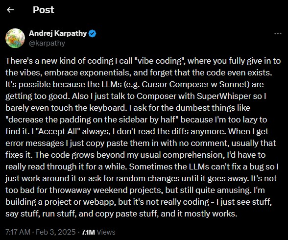
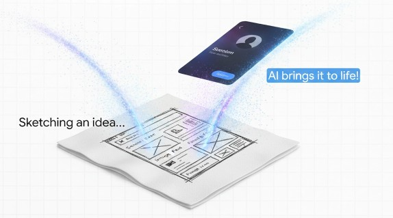
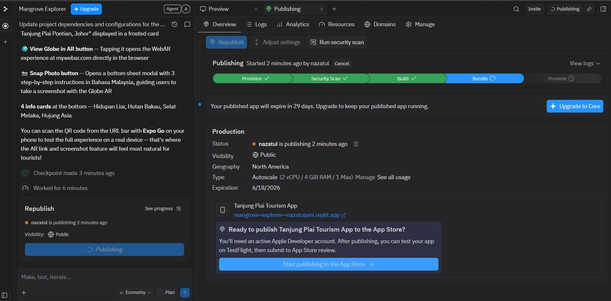
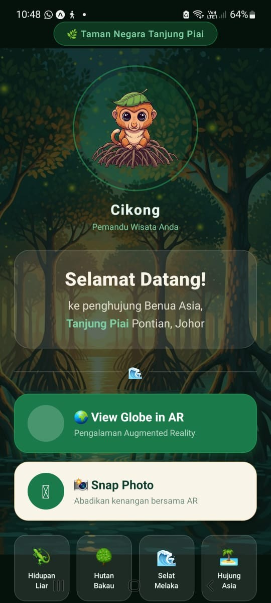

Vibe Coding Module:
Turn Ideas into Reality
A practical introduction to AI-assisted mobile app development. Do we need to spend months learning heavy coding like Java or HTML? Or can we just use prompting to turn our ideas into reality? The answer is YES, it is possible. Welcome to the Module.
At a Glance
-
60 Minutes Total
Estimated webinar duration
-
5 Core Modules
Mindset, Replit, Expo, Native, Publish
-
Mode
Interactive Online / Self-Paced
Who is this module for?
(School, Poly, Uni)
Lecturers
Beginners
What you will learn (Learning Outcomes / LO)
-
LO1
Internalize the definition of Vibe Coding and the UX framework (Intent-Context-Quality) alongside B.A.S.I.C.
-
LO2
Produce high visual impact Web Apps and deploy directly using Replit.
-
LO3
Develop and test functional mobile app prototypes using Expo Snack.
-
LO4
Generate native Android Studio code for hardware/sensor integration (Camera, Notifications).
-
LO5
Generate Application Package (APK) files for sharing and deployment.
Full Module Structure
The Mindset & Theory
Vibe Coding philosophy (Karpathy), ICQ UX layer & B.A.S.I.C.
Visual Web (Replit)
Build visual web tourism app with immediate deployment.
Prototypes (Expo)
Build & correct app logic using React Native emulator.
Native Power
Transition to Android Studio for deep hardware/camera ML.
Publishing
Generating APKs and sharing your app globally.
The Right Foundation & Vibe Coding Mindset
Module Objective:
Understand the definition of Vibe Coding from an AI expert, the UX design framework (ICQ), and the technical framework (B.A.S.I.C) for effective AI communication.
1.1 What is 'Vibe Coding'?
According to the Merriam-Webster Dictionary, vibe coding (also written as 'vibe-coding') is a recently coined term for the practice of writing code, making web pages, or creating apps simply by telling an AI program what you want and letting it create the product for you. In vibe coding, the user does not need to understand how or why the code works and must often accept that a certain number of bugs or glitches will be present.
The term was popularized by Andrej Karpathy (AI Researcher & Co-founder of OpenAI) in February 2025. He describes a workflow in which the user’s primary role shifts from 'writing code' to 'guiding an AI assistant'.

Andrej Karpathy
@karpathy
"There’s a new kind of coding I call 'vibe coding', where you fully give in to the vibes, embrace exponentials, and forget that the code even exists... I’m building a project or webapp, but it’s not really coding—I just see stuff, say stuff, run stuff, and copy paste stuff, and it mostly works."

1.2 UX Steering Layer: The I.C.Q Framework
Vibe Coding produces functional artifacts quickly. This speed introduces risk. Without a clear UX framework, the output might lack structure. UX professionals use the Intent-Context-Quality (ICQ) model as a steering layer (Hohn & Loydl, 2026):
Intent
What is to be achieved? The professional objective for users, not technical realization. E.g., not "Build a dashboard", but "Provide an at-a-glance status overview."
Context
Under which conditions? Visual constraints, existing systems, accessibility. Concrete artifacts (like sketches) restrict AI interpretative variance.
Quality
How do we recognize a good result? Is it runnable? Understandable UX? Integrable? Vibe coding shifts effort from manual typing to quality curation.
1.3 Technical Framework: The Science of Prompting (B.A.S.I.C)
If ICQ is the 'What' (UX Philosophy), then B.A.S.I.C is the 'How' (The technical framework for writing text to Gemini).
Module 1 Knowledge Check
According to the concept of Vibe Coding, what is the primary role of the user today?
Visual Web Apps (Replit)
Module Objective:
Build a tourism app using the Replit platform because it provides the highest visual impact, straightforward results, and hides complex coding.
Introduction & Problem Context:
Why use Replit Agent? This platform is amazing for Vibe Coding. You don't need to look at messy HTML or CSS files. You just type, the AI builds it, and it instantly deploys a live website URL!
Our Context (ICQ Theory): We want to build a Tourism App for Tanjung Piai National Park, Pontian. Our Intent is to provide a visual Mangrove Forest & AR Technology experience.
Hands-On Activity 1: Tanjung Piai Prompt (Replit)
Open Replit and create a new Agent project.
Copy the B.A.S.I.C prompt below and paste it into the Replit Agent. Notice how detailed the [Context] & [Intent] is!
Let Replit magically build the files. Once done, click the 'Deploy' / 'Publish' button at the top right corner.


Module 2 Knowledge Check
Why is a platform like Replit highly popular for starting Vibe Coding compared to Android Studio?
Mobile Prototypes (Expo Snack)
Module Objective:
Apply B.A.S.I.C to build mathematical logic apps using a web-based React Native emulator.
Introduction & Problem Context:
Difference between Replit and Expo Snack? Replit is great for HTML websites. But if we want true mobile app structures (React Native), we use Expo Snack to build stronger app logic!
The Problem: We see a viral Khairul Aming recipe for Puding Roti! But it is only for 2 people, and we want to cook for 10. We need to calculate the exact ingredients to buy at the shop.
First time using Expo Snack? Watch this quick guide:
Watch Tutorial: How to use Expo SnackHands-On Activity 2: Generating Recipe Logic
Copy the prompt below and paste it into Gemini.
[B] The app only needs one screen.
[A] It needs inputs for original servings (e.g. 2) and target servings (e.g. 10). Take a text list of ingredients, and when I press 'Calculate', extract the numbers and multiply the amounts by (Target/Original). Display the new grocery list below.
[S] Just use React state for temporary memory.
[I] Put everything in a single App.js file.
After Gemini generates the response, click 'Copy Code'. Open Expo Snack (App.js), delete old code, and paste.
Click the 'Web' tab in the right panel, OR scan the 'My Device' QR code using the Expo Go app!
Hands-On Activity 3: The "C" (Correct)
Remember the ICQ Theory from Module 1? The UX quality is poor! No checkboxes for shopping. Ask AI to Correct it:
Go back to Gemini and send this correction prompt:
Copy the newest code, paste it back to App.js. Your app UX is now upgraded!
Hands-On Activity 4: The "S" (Storage)
Our app looks great, but there is one problem: If we 'refresh' or close the app, our grocery list disappears! Let's revisit the S (Storage) concept. Command the AI to change temporary memory to permanent phone storage (AsyncStorage):
Send this storage upgrade prompt to Gemini:
Copy the newest code, paste it back to App.js. Try adding items, refresh Expo Snack, and see that your list is now saved permanently in the phone!
Problem Context 2:
We have leftover milk from our recipe! We need an Expiry Date Tracker. For a start, let's build a manual version (typing the date) using Expo Snack.
Hands-On Activity 5: The Manual Expiry Tracker
Open Gemini and send this prompt. Then paste the generated code into your Expo Snack App.js file.
Module 3 Knowledge Check
If the code runs smoothly but the grocery list has no checkboxes, what Vibe Coding action should you take?
Native Power
Module Objective:
Understand web platform limits, transition to native Android Studio for hardware/sensor integration.
Introduction: Web Limitations
In Module 3, we built the Expiry Tracker manually. But we are lazy to type various date formats! We want to use the camera to scan expiry dates offline!
Limitation: Web Apps (Expo) struggle with heavy offline Machine Learning (OCR). For smart camera sensors, we must use native power: Android Studio.
Not sure where the Gemini Agent is in Android Studio? Watch this guide:
Watch Tutorial: Using Gemini Agent in Android StudioHands-On Activity 6: The Native ML Prompt (Smart Camera)
Open Android Studio on your computer. Open the built-in Gemini Agent in the right panel.
Send this 'Mega' B.A.S.I.C prompt to the Agent. Notice how we ask it to build a 'target box', save the product name, build a list, and automatically calculate the days left until expired!
The Agent will generate the Kotlin code and update your MainActivity.kt file live. You no longer need to copy and paste manually!
Press the Run (▶️ Green icon) button at the top to launch the app on the Emulator!
Module 4 Knowledge Check
If you need deep hardware integration like an offline Smart Camera, which platform is the most powerful?
Publishing & Deployment
Module Objective:
Differentiate the deployment methods of Web Apps (Replit) and Native Apps (APK) to the public.
1. Pautan Web (Replit)
As in Module 2, Replit immediately generates a Live URL. This is the fastest way and users don't need to install anything!
2. Fail APK (Android Studio)
In the software, click 'Generate Signed APK'. This file can be shared via WhatsApp or uploaded to Play Store!
Tonton Tutorial Generate APKModule 5 Knowledge Check
What is the final step to allow your Android Studio app to be shared freely (APK)?
Turn Your Own Ideas Into Reality
Now you have completed all five modules! You might be thinking, "How do I write a perfect B.A.S.I.C prompt for my own app idea?" Do not worry. Follow the simple steps below:
Click the 'Custom GEM AI' button (floating robot icon) at the bottom right corner of your screen.
Copy the template below, fill in your idea, choose your platform (Replit, Expo, or Android Studio), and send the message to the GEM:
Magic! The GEM will act as your System Architect and write the perfect B.A.S.I.C prompt. Copy that prompt, paste it into your chosen coding platform (Replit Agent, Android Studio, or a new Gemini chat), and let the AI generate your code!
The Conclusion
This is what I mean by "Vibe Coding". You don't need to be a coding genius. You just need a pure soul (Jiwa), a UX framework to solve real problems for other people, and the action to guide your AI assistant.
Behind the Scenes: How This Module Was Built
Did you know? This entire interactive learning website was also built using the Vibe Coding concept and Google Gemini Canvas! Not a single line of manual HTML coding was typed from scratch.
If you are an educator or student who wants to create an interactive Self-Instructional Material (SIM) like this, here is the secret Master Prompt we used. You can copy it to build a module for your own subject:
💡 Crucial Step: Open Google Gemini and make sure to turn on the 'Canvas' button (the icon near the chat box) before pasting this prompt! Gemini will generate a complete HTML file that you can download and instantly publish for free using web platforms like GitHub Pages or Netlify.
Module Instructor
Dr Nazatul Aini Abd Majid
CAIT, FTSM, UKM
Lecturer at the Center for Artificial Intelligence Technology (CAIT), FTSM, UKM, currently teaching Mobile Application Programming, with active research in Augmented Reality for Education, Educational Data Mining & Learning Analytics.
nazatulaini@ukm.edu.my